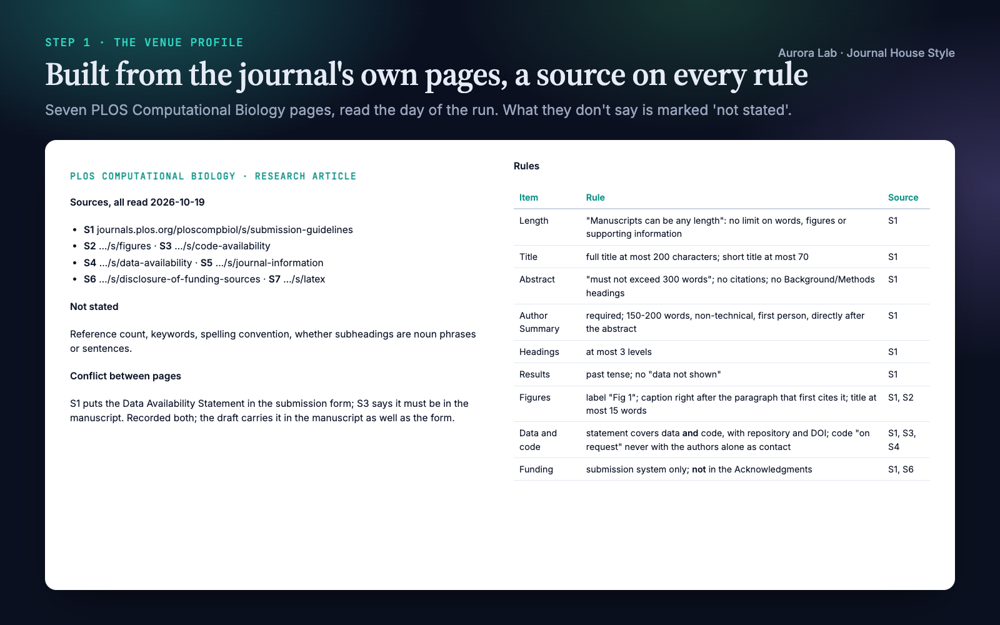
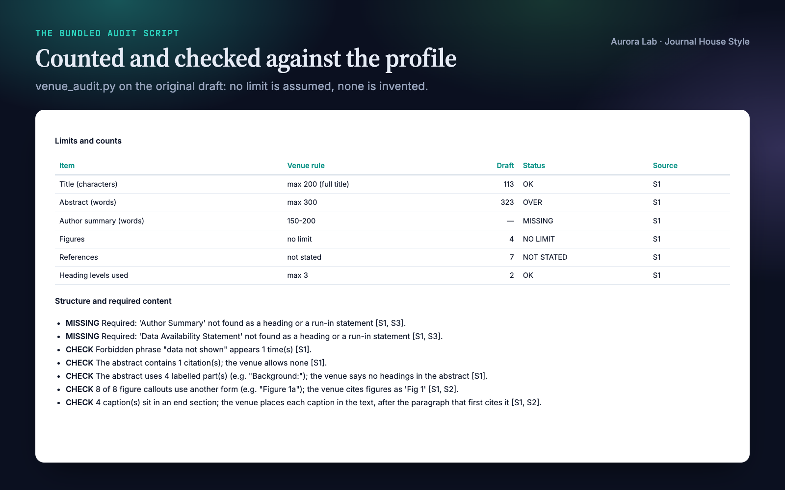
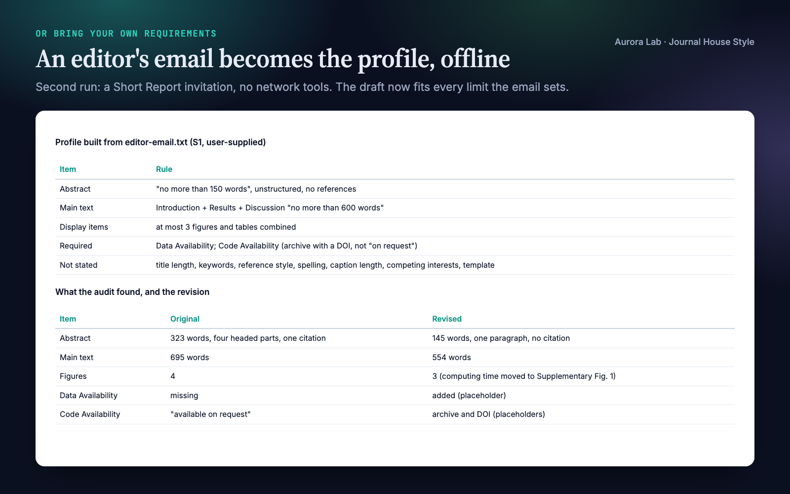
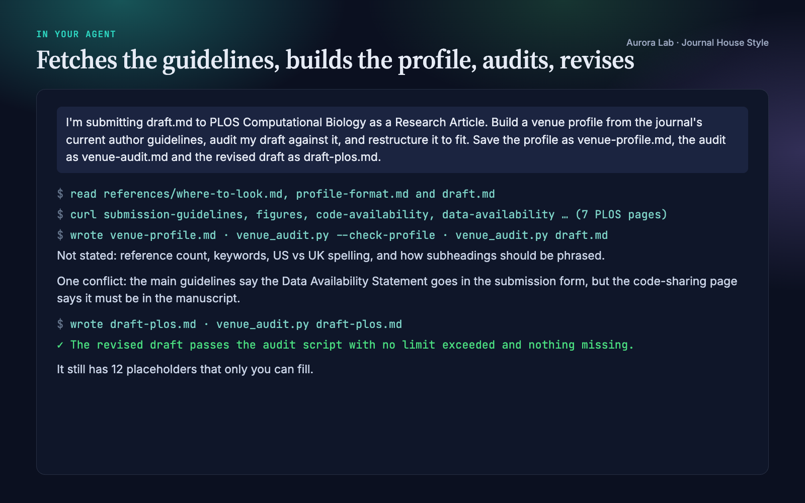

Overview
Editors and thesis offices check the shape of a manuscript before anyone reads it: the word limits, the sections they require, the statements they demand, how figures are labelled and where captions go. Every venue sets these differently, and the rules live on pages that change. Journal House Style makes your agent fit the manuscript to the venue you name, from that venue's own current pages, or to the requirements you give it:
- A venue profile from the venue's own pages. The agent finds the current author guidelines for your journal, conference, publisher series or thesis office, using a bundled guide to where about twenty publishers, the major ML, vision and language conferences, LaTeX template galleries and university thesis offices keep them. It reads them and writes a profile for your article type: limits and what the main-text count excludes, display items and references, section order, required sections and statements, heading depth, caption rules, reference style and template.
- Or your own requirements. A lab style sheet, a department thesis guide, a template or an editor's email becomes the same profile, offline.
- A source on every rule. Each rule records the page it came from and the date it was read, or "user-supplied". What the sources do not say is recorded as not stated. When two pages disagree, both are kept and you are told.
- An audit you can act on. One table of what is over a limit, missing, forbidden or out of order, each finding citing the rule it breaks, then a prioritised list of actions.
- Restructure, cut, recheck. Sections reordered, required statements added, captions relabelled and moved, material moved rather than deleted, then cut to budget and audited again. Anything only you can supply, such as a code DOI or an ethics approval, becomes a visible placeholder.
Other Aurora Lab skills for the same draft: Scientific Voice (how the sentences read), Claim Check (does each sentence stay inside its evidence?) and Test Readers (how a cold reader takes it) pair well with it. Each works on its own.
Quick start
- Get the skill from Agensi and add it to your agent (Claude Code, Codex CLI, Cursor, Gemini CLI or any agent that loads SKILL.md skills).
- For a named venue, allow web access (the agent's web-fetch tool, or a shell with
curl). With your own requirements nothing is fetched. - Optional: Python 3.10+ for the audit script (standard library only).
- Name the venue and the article type, or point to your requirements.
Example requests:
- "I'm submitting draft.md to PLOS Computational Biology as a Research Article. Fit it to their guidelines."
- "Build a venue profile from the NeurIPS call for papers and check my paper against it."
- "Here is my department's thesis chapter style sheet: make chapter 3 comply."
- "The editor's email says 4,000 words and 5 figures. Cut the draft to that."
- "Is this ready to submit to the journal? Check it against their author guidelines."
What you get
Everything below comes from two real runs: fresh agent sessions with only this skill installed, given the requests shown. The inputs were ours: a synthetic, seeded draft.md of about 1,500 words describing a made-up lake-monitoring method, "BloomCast", written the way a first draft aimed at another journal often is. Against PLOS Computational Biology's guidelines we planted a 323-word abstract with labelled parts and a citation, no Author Summary, "data not shown" in the Results, captions collected at the end and labelled "Figure 1", a funding sentence in the Acknowledgments and code "available from the corresponding author on request".
Run 1, a named venue ($1.55, 253 s, web access allowed): the agent fetched seven PLOS Computational Biology pages and wrote a profile with 7 sources and a recorded conflict between two of them. We checked every value it extracted against the fetched pages. It found all six planted problems plus a missing ethics statement for field work, references out of order and an undefined abbreviation; wrote a 179-word Author Summary from the draft's own findings for the author to review; cut the abstract to 294 words without removing a number; moved and relabelled every caption; and left 12 placeholders for what only the author can supply. The revised draft passes the audit with nothing over a limit and nothing missing.
Run 2, your own requirements ($0.66, 127 s, no web access): given an editor's email (ours) inviting a Short Report, it built the profile from the email alone, marked what the email does not state, and cut the draft to fit: abstract 323 to 145 words, main text 695 to 554 words against a 600-word limit, four figures to three.





How it works
- Build the venue profile. The agent reuses a matching profile if one exists. Otherwise it chooses the article type explicitly, then either fetches the venue's current pages (main guidelines, article types, figure and policy pages; for a conference, the call for papers and style kit) or reads the requirements you give it. Each rule goes into the profile with its source; anything unstated is written not stated. The profile is validated by the script before use, and you are told the main limits, what was not stated and any conflict between sources.
- Audit. The script checks every rule it can count; the agent reads the draft for the rest (reference style, tense, statement content, template) and writes one table plus a prioritised action list. Venue findings cite the profile; generic research-article advice is labelled generic.
- Restructure. Section order, required sections and statements, heading depth, captions (label, title length, placement), display items within the limit; material moved to Methods or supplementary material rather than deleted.
- Cut to budget. Repetition first, then framing sentences, catalogues of parameters, secondary results and caption detail; sentence compression last. A claim's evidence, its comparator, a limitation the scope depends on and required content are never cut.
- Check. Re-run the audit, list the placeholders, the not stated items worth confirming and the items that belong in the submission system rather than the manuscript.
Fetching. The agent reads pages with its web-fetch tool or with curl and a normal browser identity (the bundled guide says which sites need which), confirms each page is the real guideline page and not a cookie wall or bot check, and otherwise asks you to paste the text or save the page as PDF. On the day we checked, PLOS, Nature Portfolio (with curl), eLife, IEEE, APS, Cambridge, Frontiers and the conference sites were readable; Elsevier, Wiley, Cell Press, Springer, Science, PNAS, ACM, ACS and MDPI showed bot checks to automated fetches.
The venue profile
A Markdown file (research/venue-profile.md, or next to your draft) with a readable summary and one block the script parses. Every line carries its source:
venue: PLOS Computational Biology
article_type: Research Article
built: 2026-10-19
[S1] https://journals.plos.org/ploscompbiol/s/submission-guidelines (accessed 2026-10-19)
[S2] https://journals.plos.org/ploscompbiol/s/figures (accessed 2026-10-19)
abstract_words: max 300 [S1]
author_summary_words: 150-200 [S1]
references: not stated [S1]
caption_label: Fig [S1, S2]
caption_placement: inline [S1, S2]
forbidden_phrases: data not shown; unpublished work; personal communication [S1]
reference_style: Vancouver (ICMJE), numbered in order of appearance [S1]
Limits are written as max N, min N, N-M, about N (a recommendation), not stated or no limit; a bare number is rejected, so the profile always says what kind of limit it is. Rules the script cannot count, such as reference style, are kept as reading rules for the agent and listed in every audit with their source.
Files it reads and writes
| Path | |
|---|---|
| Reads | the manuscript you name (Markdown or LaTeX, one file or a folder of section files), your requirements files if you give them; with a research/ folder also research/paper/*, research/figures/*.md (caption drafts), research/refs.bib (reference count) and research/claims.md (so cuts never drop a claim's evidence) |
| Writes | the venue profile (research/venue-profile.md, or next to the draft), the audit (research/paper/venue-audit.md, or next to the draft) and a revised draft where you ask for one |
| Network | reads the venue's public guideline pages only; nothing is uploaded and no login is used |
| Never | adds results or numbers, changes findings, or edits files in place unless you ask |
The audit script
python journal-house-style/scripts/venue_audit.py --profile venue-profile.md --check-profile
python journal-house-style/scripts/venue_audit.py draft.md --profile venue-profile.md --out venue-audit.md
python journal-house-style/scripts/venue_audit.py research/paper/ --profile research/venue-profile.md \
--bib research/refs.bib --target-words 4000 --json
Standard library only, no network; it writes only the report you name with --out. --check-profile prints every rule as parsed and exits with an error for a rule without a source, an undefined source, an unreadable limit or a missing article type. --strict exits 1 when anything is over or under a limit or missing.
| Checks (each only when the profile states it) | Detail |
|---|---|
| Limits | title words or characters, abstract, any named section (lay summary, author summary, Methods), main text with the components the venue counts: OVER, UNDER, CHECK (above a recommendation), NOT STATED or NO LIMIT |
| Counts | figures, tables, display items, supplementary figures, references (from the list or a .bib), keywords, heading depth |
| Structure | missing sections and required statements (as a heading or a bold run-in), section order, forbidden phrases, citations or labelled parts in the abstract, Results and Discussion subheading rules |
| Captions | caption and caption-title length, label form ("Fig 1" vs "Figure 1") in captions and callouts, placement in the text or at the end |
| Reading rules | every other profile rule, listed with its source for the agent to check |
| Generic checks | keyword heuristics about research articles in general (abstract and introduction moves, inline statistics, limitations, persistent identifiers, caption hygiene), labelled as not venue rules |
| Budget | --target-words N scales your current section proportions to a target |
FAQ
Which venues does it work with?
Any venue that writes down its requirements: journals, conferences, publisher series, thesis and graduate offices, and your own lab or department. The bundled guide covers where about twenty publishers, the major ML, vision and language conferences, LaTeX template galleries and thesis offices keep their rules; for anything else the agent searches for the venue's own guidelines page. The skill ships no venue's rules: it reads the current ones each time.
Are the limits up to date?
They are read from the venue's pages when you run it, and each rule records the URL and the date it was read. A saved profile is reused with its build date shown, and the agent offers to refresh an old one.
What happens when a publisher's site blocks the agent?
It uses its web-fetch tool or curl with a normal browser identity. If the site still serves a bot check or consent page, it tells you which URL it tried and asks you to paste the page text or save it as PDF. It never fills a value from memory or from another journal of the same publisher.
Can I use my own style sheet or an editor's email?
Yes, and offline: the profile is built from what you give it, with "user-supplied" as the source. The second demo run did exactly this with an editor's email, and the skill ships a worked example built from fictional thesis-chapter requirements.
Will it invent numbers or change my findings?
No. Missing content becomes a visible placeholder listed for you, and wording that would change a claim is flagged rather than rewritten: in the demo it flagged "transfers across lakes without retraining" for a model fitted to each lake. Text it writes from your own draft, such as a required author summary, is marked for your review.
Does it work with LaTeX?
Yes. The script reads LaTeX source as well as Markdown, and the agent edits in the format you wrote in. Page limits cannot be measured from source, so they are listed for you to check on the compiled PDF. A Word file needs converting to Markdown first (for example with pandoc), or paste its text.
How is it different from Scientific Voice?
Scientific Voice edits sentences. Journal House Style works at the level of the venue: limits, section order, required statements, headings, captions and end matter. They pair well, and neither needs the other.
Limitations
- The profile is only as complete as the pages read: a rule buried in a page the agent did not open can be missed. Every rule is sourced so you can check it; read the profile before you submit.
- Some publisher sites block automated fetches; you then paste the page or save it as PDF.
- Guidelines change. Each rule records the date its page was read.
- The script checks only what can be counted from source text. Page limits, fonts, figure resolution and reference formatting are checked by reading or on your compiled PDF; the generic checks are keyword heuristics.
- Markdown and LaTeX only; convert Word files first.
- It works at the venue level. Sentence-level style, checking claims against data, submission-system forms and figure files are outside its scope; it lists the submission-system items for you.
- It never adds results or numbers; missing content becomes placeholders for you to fill.
Changelog
1.0.0 · October 2026 · First release: venue profiles built from any venue's current guidelines or your own requirements, with a source on every rule; profile-driven audit script.